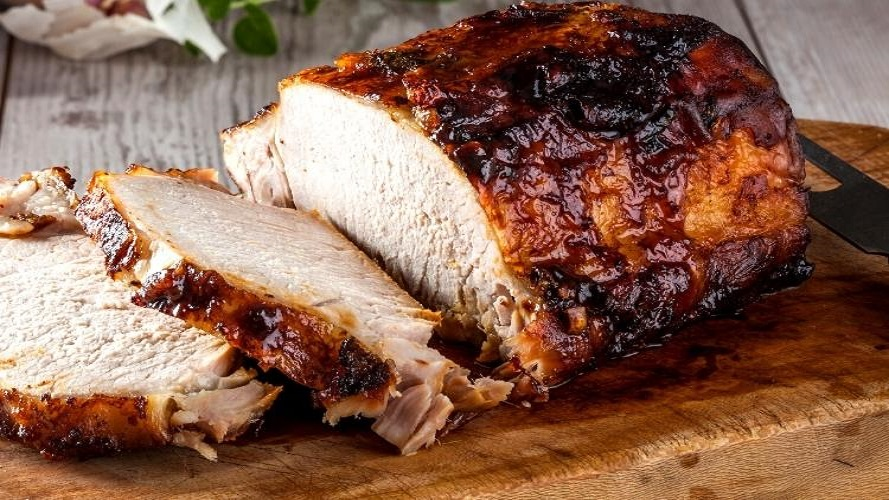

LOMBO ASSADO
- 
-
- 1,5 kg de lombo de porco
- 1 cebola cortada
- Suco de 1 limão
- 5 colheres de sopa de azeite
- 4 dentes de alho
- 4 folhas de louro
- 1 colher de chá de sal
INGREDIENTES
MODO DE PREPARO
Faça vários furos na carne e reserve, no liqüidificador bata todos os demais ingredientes.
Passe essa mistura no lombo.
Coloque em uma assadeira, cubra com papel alumínio e leve ao forno já pré-aquecido Deixe assar por cerca de 30 minutos.
Enquanto a carne assa, adicione ½ xícara de água para criar um pouco de caldo.
Retire o papel alumínio, vire o lombo e asse até dourar, sempre adicionando água à medida que for secando.. DICAS
COSTELINHA NA BRASA
-

-
- 1 peça de costela suína de 1,2kg
- Sal triturado a gosto
- Pimenta-do-reino a gosto
- Chimichurri a gosto
- Páprica picante a gosto
- Azeite para besuntar e unir os temperos
- Papel-alumínio suficiente para enrolar
INGREDIENTES
MODO DE PREPARO
Coloque a costelinha numa bancada e seque bem com papel-toalha, em seguida, tempere ambos os lados com sal, pimenta, chimichurri e páprica.
Agora, espalhe um bom fio de azeite e massageie a carne; reserve entre 15 e 20 minutos para penetrar os sabores. Feito isso, leve à grelha da churrasqueira em braseiro forte. Nessa etapa, você vai selar os dois lados da costelinha.
O tempo médio é 2 minutos para cada lado ou até dourar bem. Antes de retirar da churrasqueira, abra 3 folhas grandes de papel-alumínio e empilhe uma sobre o outra. Depois, posicione a carne no centro do alumínio e enrole apertado.
Para finalizar, volte à churrasqueira em braseiro forte por cerca de 1 hora. É fundamental virar a carne na metade do tempo para assar uniformemente.
Ao término do cozimento, retire do alumínio, reserve alguns minutos e aprecie sem moderação.
PERNIL DE FORNO
-
- 2,5 kg de pernil
- 4 dentes de alho
- ½ limão espremido
- 2 colheres de vinagre branco
- ½ cebola grande picada
- Pimenta do reino a gosto
- Chimichurri a gosto
INGREDIENTES
MODO DE PREPARO
ara começar a temperar de forma correta, basta, primeiro formar diversos furos aleatórios sob a peça. Isso é importante para que todo o tempero entre por toda a carne.
Em seguida, coloque os dentes de alho amassados, a pimenta do reino e o limão sob a peça. Espalhe tudo com as mãos por toda a carne.
Em seguida, coloque o vinagre e o deixe espalhar por toda a carne. Acrescente a cebola e o chimichurri e deixe por cerca de 2 horas descansando para que a carne puxe o tempero.
Leve ao forno a 280° com o papel alumínio cobrindo a forma, por mais 2 horas.